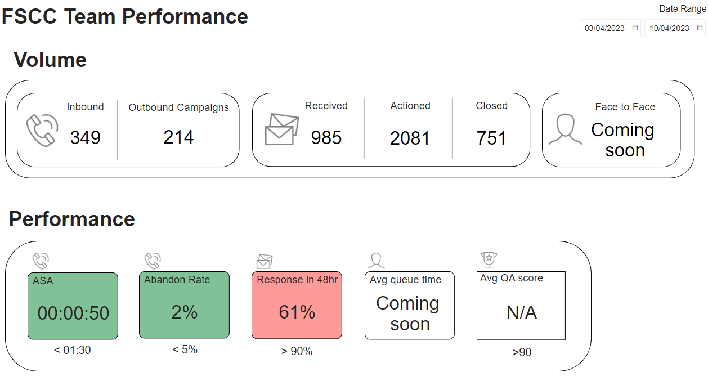
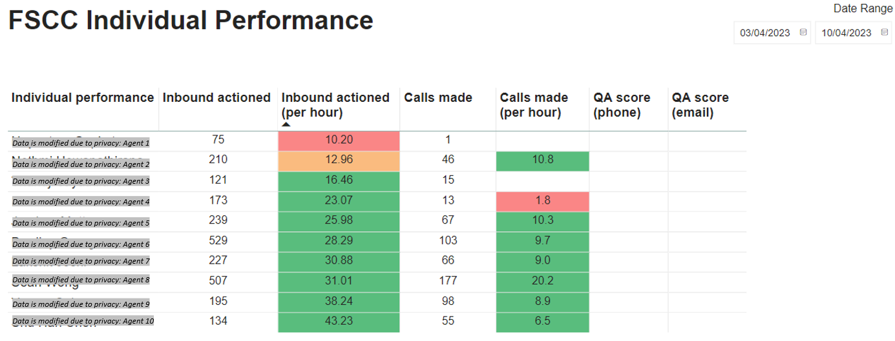

Build an interactive performance dashboard
In collaboration with the Senior Data Analyst from the Analytics team at UTAS, I worked along with my Manager to drive the development of an interactive performance dashboard using Power BI for the Future Students contact center team. This project aimed to provide a comprehensive and accurate measurement of the team's workload and performance, while introducing Smart KPIs to enhance accountability.
Prior to the implementation of this dashboard, the Student Services team lacked a clear KPI and performance monitoring system. Although the team consisted of hardworking and talented individuals, their efforts were not reflected in a reportable format, and there was a lack of tools for tracking efficiency. With the new performance dashboard, we shifted from measuring the quantity of workload to focusing on incidents actioned, which provided a more accurate reflection of the effort involved in handling each incident.
The performance dashboard seamlessly integrated data from various sources, including Oracle CRM, rostering software WheniWork, and the telephony system Touchpoint. By leveraging this data, we were able to perform mathematical calculations to track key metrics such as Average Speed of Answer, Abandon rate, and response times within 48 hours. Additionally, we incorporated monthly Quality Assurance scores to ensure that the focus was not solely on quantity, but also on the quality of responses provided by the team.
The impact of this performance dashboard was significant. The team now had a clear understanding of their workload and performance metrics, enabling them to make data-driven decisions and prioritize their tasks effectively. The dashboard also allows for more effective rostering to ensure the team hits the targeted KPI. As a result, we observed a 5% decrease in Average Speed of Answer and a 2% reduction in Abandon rate within the month of implementing the dashboard. These improvements not only enhanced the overall efficiency of the contact center team but also contributed to improved customer satisfaction.
The success of this project highlights my expertise in data analysis, dashboard creation, and collaboration with cross-functional teams. By leveraging the power of Power BI and incorporating multiple data sources, the new performance dashboard provides the Future Students contact center team with a valuable tool for measuring their performance, identifying areas for improvement, and making data-driven decisions to enhance their service delivery.